paintr draws R’s data structures as teaching diagrams. This guide tours the five structures it can draw, the two backends it draws them with, and the arguments that shape each picture. Load the package to follow along.
What paintr draws
When you teach R, the hard part is rarely the arithmetic. It is helping someone see the shape of the thing they are working with, so they picture a vector as a row of boxes, a data frame as a stack of columns that happen to line up, and an array as a pile of matrices. paintr draws exactly those pictures.
paint_vector(c(4, 8, 15, 16, 23, 42))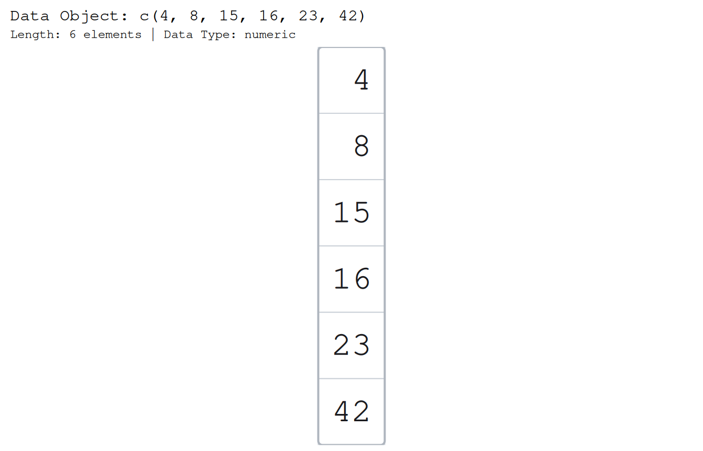
Every picture is the same idea. Each value sits in its own cell, and under each cell paintr writes the expression you would type to reach it. The label under the third box above is [3], because x[3] is how you would pull that value out. That is the whole teaching trick: the drawing and the code are the same object.
Two backends: paint_ and gpaint_
Every structure has two painters. The paint_*() functions draw in base graphics, straight to the device. The gpaint_*() functions return a ggplot object, so you can print it, save it with ggsave(), or drop it into a patchwork.
gpaint_vector(c(4, 8, 15, 16, 23, 42))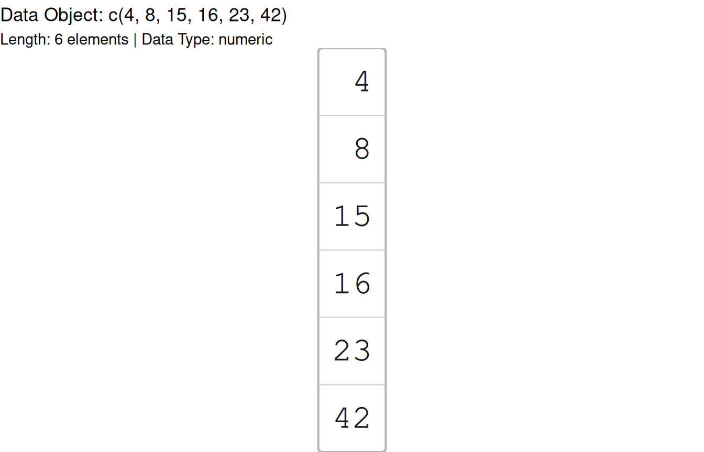
The two draw the same picture, with one difference in the ggplot version. Its panel is a single custom grob, not a layer of geoms. That is what lets paintr defer text fitting to draw time and paint the grey trailing digits you will see below, but it also means ggplot_build() sees an empty layer, and adding + scale_fill_*() has no effect. Reach for gpaint_*() when you want a ggplot in your hand, and paint_*() otherwise. The rest of this tour uses paint_*().
Vectors
A vector is a one-dimensional run of values, and that is how it draws.
paint_vector(c(-3, 5, NA, Inf, 2, 1))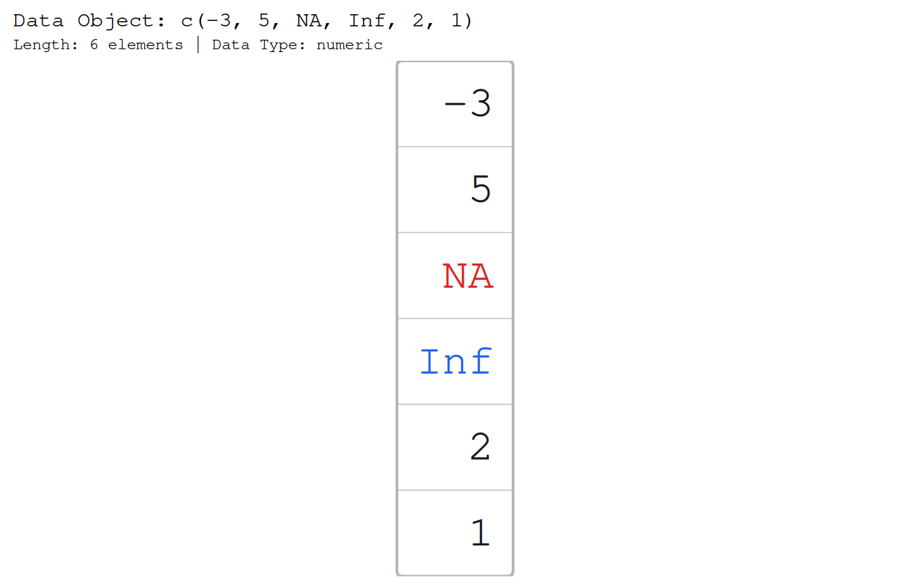
Two options earn their keep here. layout = "horizontal" turns the column on its side, and show_indices writes the position labels [1] [2] ... either "inside" each cell or "outside" the row.
paint_vector(1:6, layout = "horizontal", show_indices = "outside")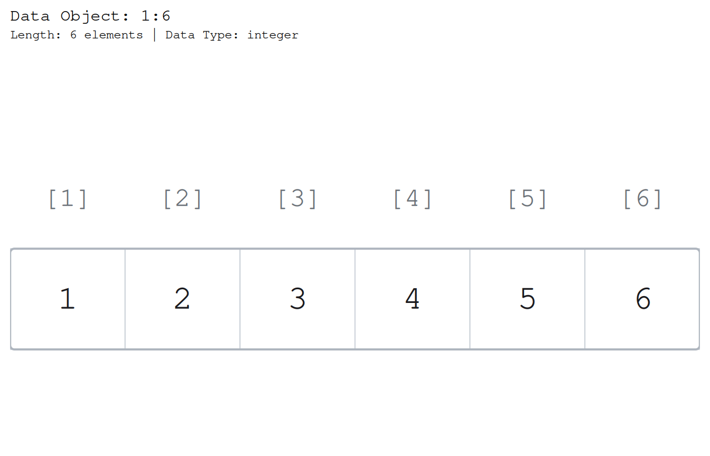
Give the vector names and it draws each name as the accessor you would type, ["mon"] rather than a bare mon, because x["mon"] is how you reach the value. The through-line holds: the label under every cell is still exactly the expression you type. Set show_names = FALSE to fall back to [1] [2].
paint_vector(c(mon = 12, tue = 19, wed = 3, thu = 8))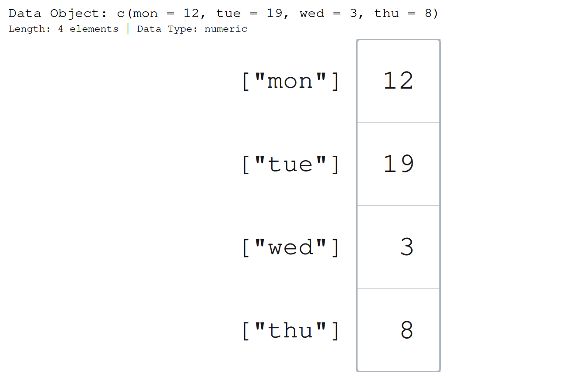
Matrices
A matrix is a grid, so it draws as one. paint_matrix() also handles a 2-D array or a 2-D table.
paint_matrix(matrix(1:15, nrow = 3))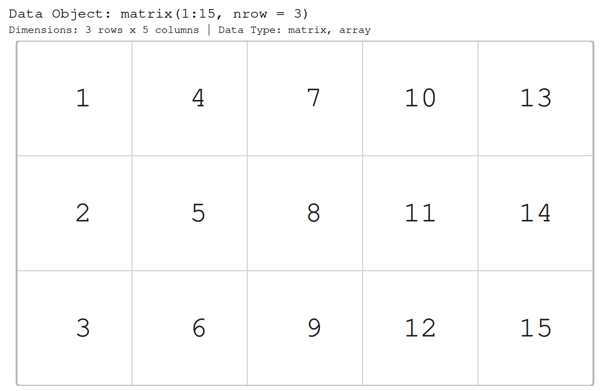
The one option you will reach for most is show_indices = "cell", which labels every cell with its [row, column] subscript. This is the picture that makes m[2, 4] finally click.
paint_matrix(matrix(1:15, nrow = 3), show_indices = "cell")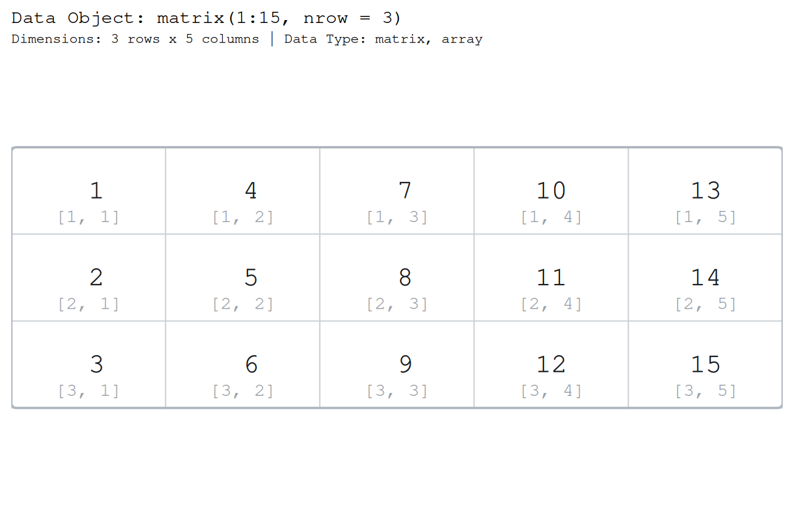
If the matrix has dimnames, they draw in the margins, and show_dimnames chooses which by taking a character vector over "none", "row", "column", and "all".
Data frames
A data frame is the workhorse, and it gets the richest default picture, with a header row of column names, the type of each column beneath it, and a row-name gutter whenever the row names are meaningful.
paint_data_frame(head(mtcars))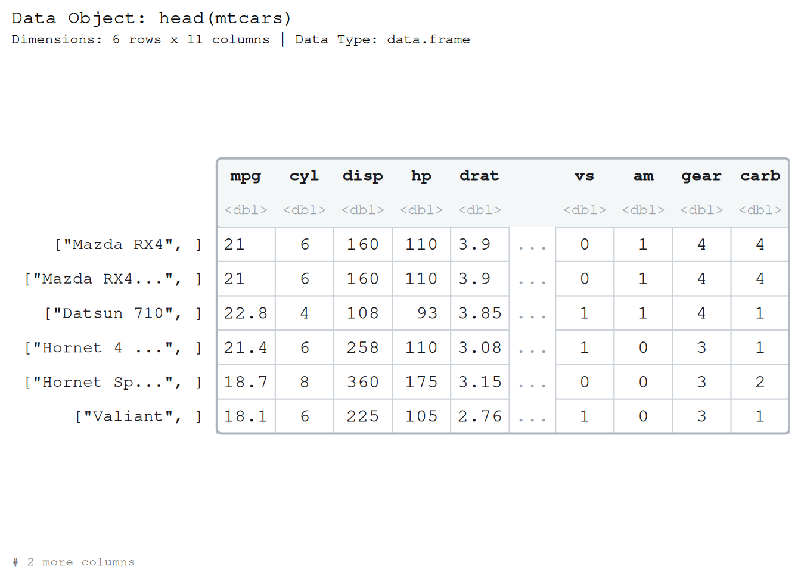
Notice the numbers. paintr shows three significant figures by default, and draws any trailing insignificant digits in grey, so a reader can see the true value without being distracted by noise. mtcars has real row names, so the gutter appears, while a fresh iris would not draw one. Toggle the extra rows with show_names, show_types, and show_rownames. paint_df() is a shorter alias.
Lists
A list is the flexible container, and its elements can have different lengths and different types. paintr draws each element as a column.
paint_list(list(id = 1:3, tags = c("a", "b"), ok = c(TRUE, FALSE, NA)))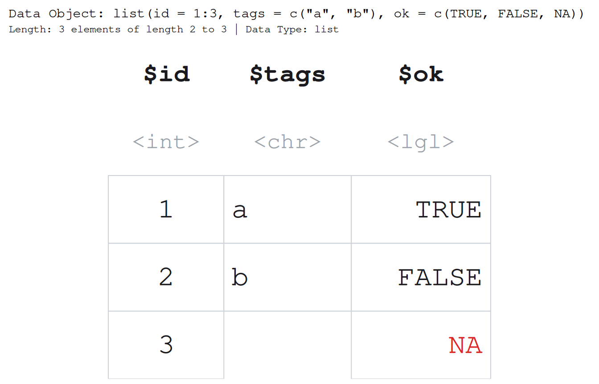
A data frame is just a list whose elements all share a length. Here is a small data frame, and here it is again as a bare list after as.list() strips the class.
df <- data.frame(x = c(1.5, 2.5, 3.5), grp = c("a", "b", "c"))
paint_data_frame(df)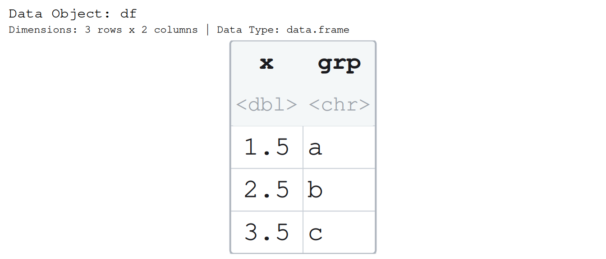
paint_list(as.list(df))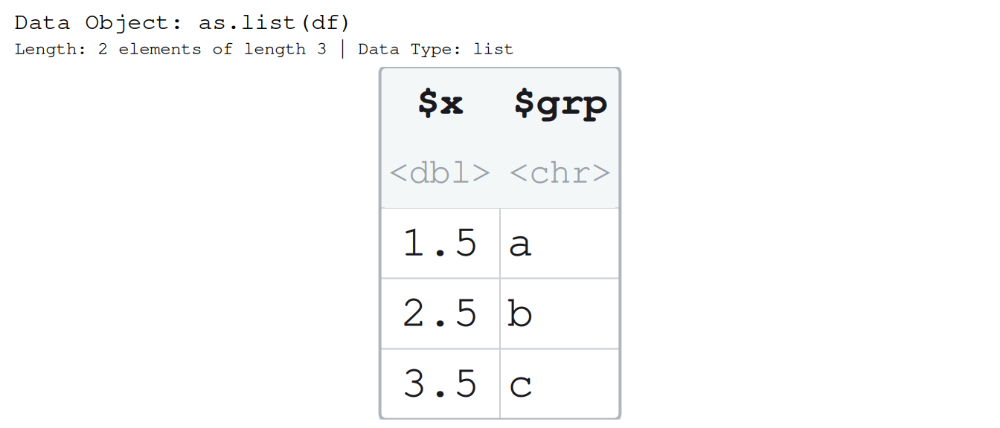
The two pictures are identical, the same columns and the same clean rectangle. The list draws that outline only because its elements share a length, and that shared length is exactly what makes a list a data frame. Shorten one element and the outline breaks with it, the ragged edge marking an object that is no longer a data frame.
broken <- as.list(df)
broken$x <- broken$x[1:2]
paint_list(broken)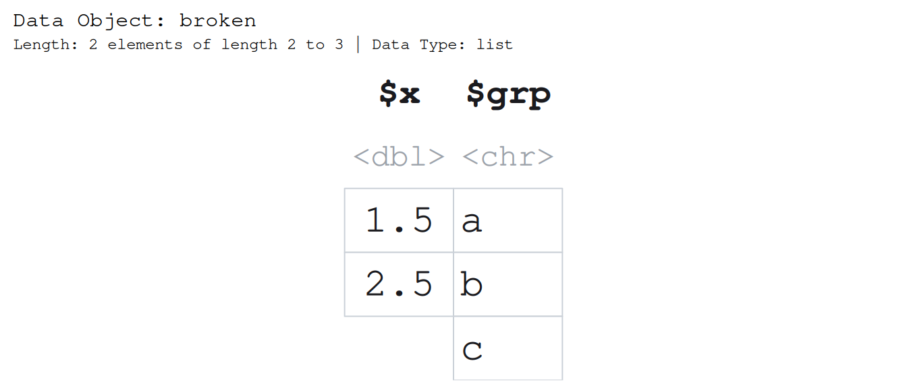
The rectangle is a convenience, though, not the truth of the object. A list is a bag of independent vectors that happen, here, to line up. Set gap and the columns move apart to say so, dropping the outline that marked them as a table.
paint_list(as.list(df), gap = 0.5)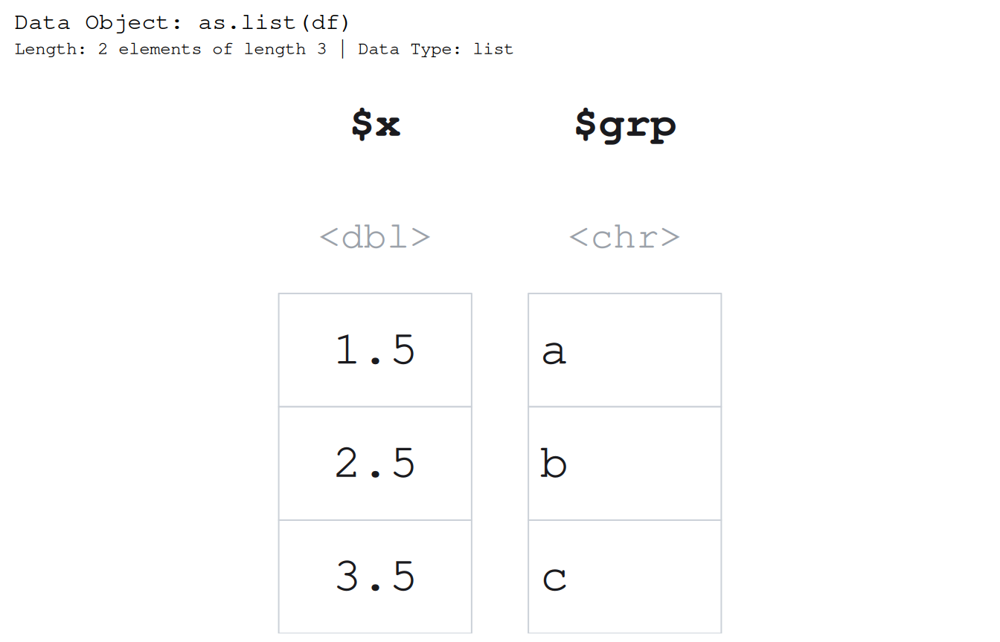
The label under each cell is an accessor you can type. show_indices = "cell" writes the [[j]][i] subscript under every value, which settles the single-versus-double-bracket question by putting the working expression under the number it returns.
l <- list(a = c(10, 20, 30), b = c(1.5, 2.5))
paint_list(l, show_indices = "cell")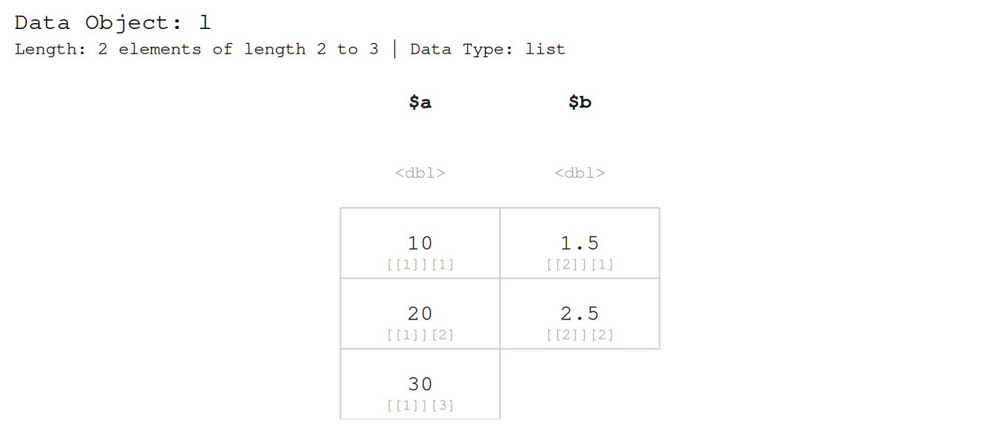
Under the 2.5 it prints l[[2]][2], double brackets to reach into the list and a single bracket to pick the element.
paintr does not draw nesting, so a list inside a list collapses to a grey <list [2]> token rather than recursing.
Arrays
An array of three or more dimensions is a stack of matrices, and paint_array() lays that stack out as a row of blocks sharing one font size. (A 2-D array is just a matrix, and draws like one.)
paint_array(array(1:24, dim = c(2, 3, 4)), show_indices = "cell")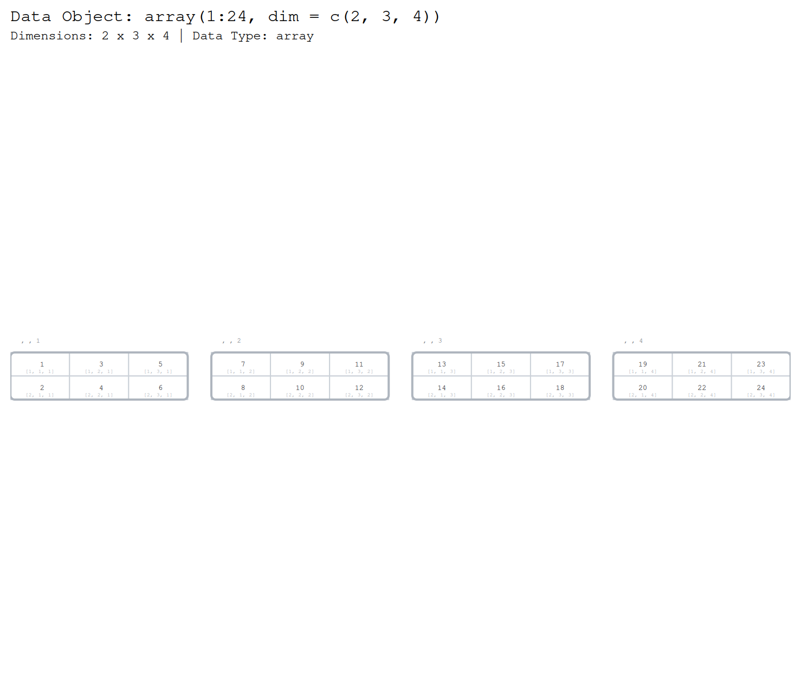
Each block is one slice, and the label under a cell is its full subscript, [2, 3, 4], a genuine 3-D index into the array. show_dimnames works as it does for a matrix, with an added "slice" lane. A genuinely huge array elides its middle, the same way the other structures do once they pass their size caps.
When a stack has more slices than sit comfortably in one row, slices_per_row wraps the blocks onto a grid, the same array laid out to stay readable. Each block keeps its own slice title, so wrapping only changes the reading order.
paint_array(array(1:24, dim = c(2, 3, 4)), slices_per_row = 2)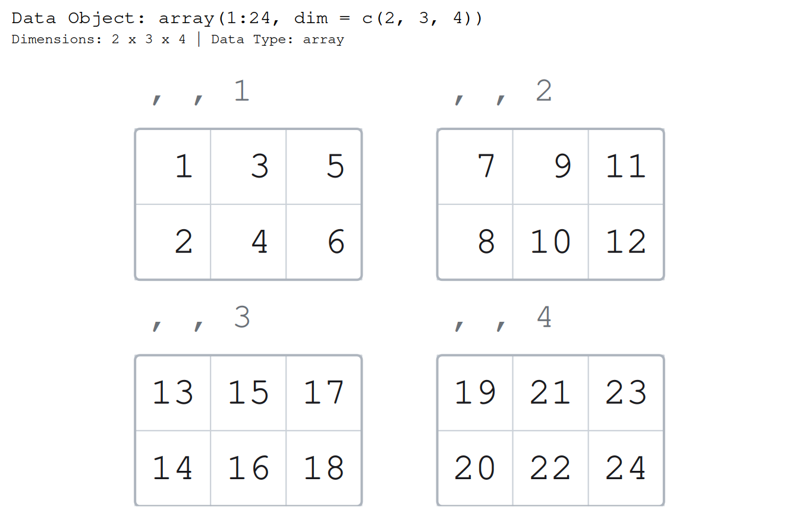
Picking a legible device size
Most defaults fit a normal plot window, but a large structure drawn in full can shrink its text below the point where it is readable. paint_size() tells you the device size that keeps everything legible, in a form you can paste straight into a png() call or a knitr chunk header.
paint_size(head(mtcars))
#> width height
#> 4.4 1.8The answer is in inches by default. Pass units = "px" for a png() at a given dpi. When a picture would be too small, paintr warns and quotes you these exact numbers.
Where next
That is the whole tour, five structures, two backends, one consistent picture. From here:
-
vignette("highlighting", package = "paintr")shows how to spotlight rows, columns, and individual cells to draw the eye where a lesson needs it. -
vignette("base-vs-ggplot2", package = "paintr")digs into thepaint_andgpaint_split and when each backend pays off.